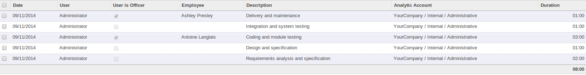

<section class="oe_container">
    <div class="oe_row oe_spaced">
        <div class="oe_span12">
            <h2 class="oe_slogan">Timesheet Employee</h2>
            <h3 class="oe_slogan">Direct Employee integration in Timesheet</h3>
        </div>
        <div class="oe_span6">
            <div class="oe_bg_img">
                
            </div>
        </div>
        <div class="oe_span6">
            <p class="oe_mt32">
Modifies Timesheet functionality, so you can directly
choose timesheet activity for employee without only
choosing user. When you select 'User if Officer', it
means selected user will be just for information purposes.
And then you can directly select employee for which timesheet
activity must be created.
            </p>
            <div class="oe_centeralign oe_websiteonly">
                <a href="http://www.oerp.eu/#trial" class="oe_button oe_big oe_tacky">Start your <span class="oe_emph">free</span> trial</a>
            </div>
        </div>
    </div>
</section>